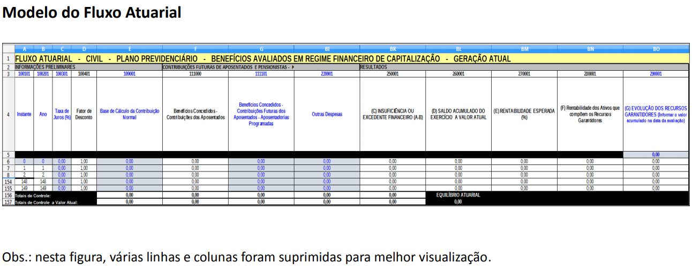
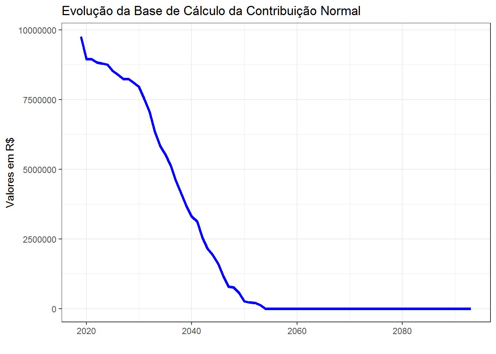
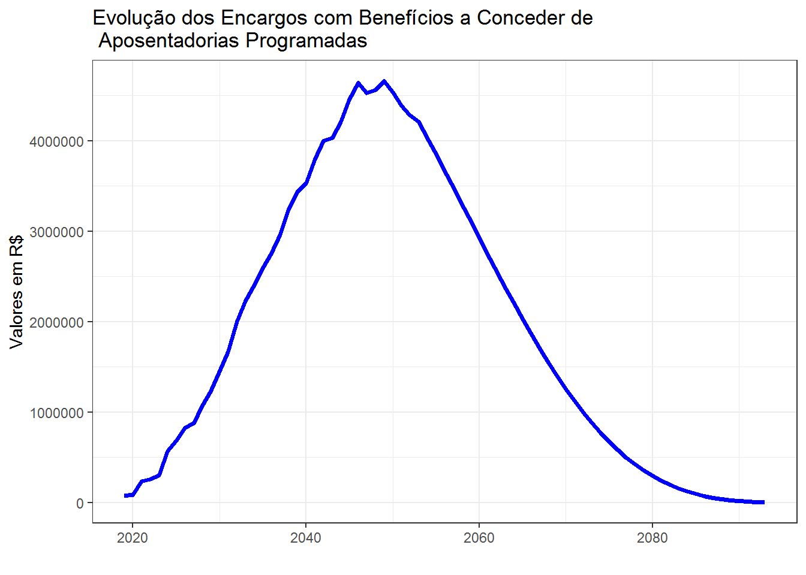
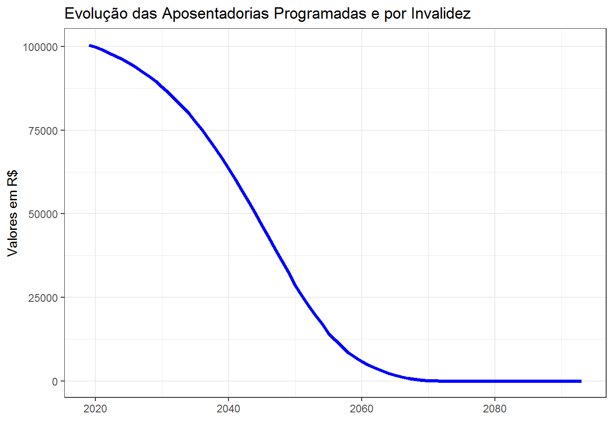
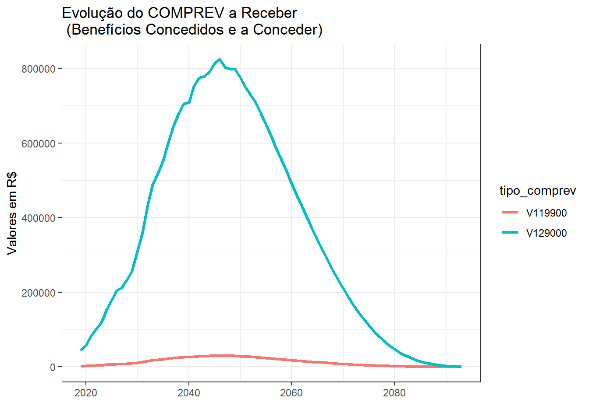

Capítulo 9 Fluxo Atuarial
O fluxo atuarial é, na definição dada pela Portaria 464/18 (Anexo - Dos Conceitos), a “discriminação dos fluxos de recursos, direitos, receitas e encargos do plano de benefícios do RPPS, benefício a benefício, período a período, que se trazidos a valor presente pela taxa atuarial de juros adotada no plano, convergem para os resultados do Valor Atual dos Benefícios Futuros e do Valor Atual das Contribuições Futuras que deram origem aos montantes dos fundos de natureza atuarial, às provisões matemáticas (reservas) a contabilizar e ao eventual deficit ou superavit apurados da avaliação atuarial”.
Os fluxos atuariais tem por objetivo evidenciar as projeções de todas as receitas e despesas do RPPS e sua estrutura deverá seguir modelos aprovados pela SPREV e disponíveis para download em seu site.
Um primeiro aspecto importante a ser considerado é que os mesmos são parte integrante da avaliação atuarial. (art. 10)
Os modelos do fluxo atuarial e orientações quanto ao seu preenchimento podem ser obtidos nos seguintes links:
- Modelos de planilhas: http://sa.previdencia.gov.br/site/2015/04/Fluxos-atuariais-Para-o-site-em-abril_2015_.zip
- Instruções para preenchimento: http://sa.previdencia.gov.br/site/2015/04/2015-_Instru%C3%A7%C3%B5es-de-Preenchimento-dos-Fluxos-Atuariais.xlsx
Também são de interesse as orientações contidas no documento Instruções gerais para download, preparação e transmissão dos fluxos atuariais
De acordo com este documento, “os valores da linha 157 estão arredondados na casa dos centavos, de forma que os valores dessa linha devem corresponder aos valores informados na aba ‘Resultados / Valores dos Compromissos’ do DRAA”.
É vedado fazer alterações na planilha de forma que a construção de rotinas de verificação automatizadas dos mesmos pode ser feita com certa segurança.
Um recorte do layout dos fluxos atuariais é apresentado a seguir:

Na planilha modelo disponibilizada pela SPREV o usuário só pode inserir dados nas células em azul, as células em branco contém fórmulas que não devem ser alteradas. A planilha é protegida por senha embora a mesma seja divulgada pela SPREV.
O modelo de fluxo atuarial contempla um horizonte temporal de 150 anos e suas últimas duas linhas contém os chamados totais de controle.
A linha denominada Totais de Controle contém simplesmente a soma de algumas das variáveis do fluxo atuarial. Já a linha Totais de Controle a Valor Atual apresenta o valor presente atuarial das variáveis do fluxo atuarial no ano da avaliação atuarial (ano de início das projeções).
A SPREV disponibiliza dois modelos de fluxo atuarial: o que deve ser encaminhado à SPREV, com 67 colunas, e o que contém o cálculo da duração do passivo, com duas colunas adicionais para auxiliar no cálculo deste valor, mas o atuário deve encaminhar para a SPREV apenas o modelo que não contém o cálculo da duração do passivo.
Em 29/01/2020 a SPREV divulgou um documento sobre a atualização nos dois modelos das planilhas dos fluxos atuariais, documento que pode ser consultado no seguinte link.
9.1 Fluxo atuarial utilizado no capítulo
Como já mencionado na Introdução, os fluxos atuariais, embora sejam elementos integrantes das avaliações atuariais, não são disponibilizados pela SPREV em seu site nem pelos RPPS em conjunto com o relatório de avaliação atuarial.
Existe um arquivo denominado Fluxo Atuarial que integra o rol de arquivos do DRAA, mas que não é, efetivamente, o fluxo atuarial, mas apenas uma síntese desse contendo apenas os valores atuais das rubricas.
Para a análise realizada neste capítulo será utilizado um exemplar de fluxo atuarial contido no arquivo 2019_FLX_CIVIL_PREV_GA_CNPJ.csv.
O nome dos arquivos dos fluxos atuariais seguem um padrão que informa o ano do fluxo atuarial, se diz o mesmo refere-se ao pessoal civil ou militar, se o fluxo é do regime previdenciário, financeiro ou mantidos diretamente pelo tesouro, se é geração atual ou geração futura e o número do cnpj do ente.
Olhando o nome do arquivo a ser objeto de análise, vê-se tratar do fluxo atuarial de 2019, do pessoal civil do fundo em capitalização do ente CNPJ. Omitiu-se o número do cnpj para não se identificar o ente em razão da SPREV ainda não disponibiliar essa informação publicamente no site.
9.2 Importação e pré-processamento dos dados
A importação dos dados contidos no arquivo do fluxo atuarial pode ser feita da seguinte forma:
fluxo_atuarial <- read_csv2("dados/2019_FLX_CIVIL_PREV_GA_CNPJ.csv",
skip = 5,
col_names = FALSE)
head(fluxo_atuarial)# A tibble: 6 x 67
X1 X2 X3 X4 X5 X6 X7 X8 X9 X10 X11 X12
<chr> <dbl> <dbl> <dbl> <dbl> <dbl> <dbl> <dbl> <dbl> <dbl> <dbl> <dbl>
1 0 2019 6 1 9.76e6 0 0 0 0 0 0 1638.
2 1 2020 6 0.943 8.95e6 0 0 0 0 0 0 2135.
3 2 2021 6 0.89 8.95e6 0 0 0 0 0 0 3100.
4 3 2022 6 0.840 8.84e6 0 0 0 0 0 0 3763.
5 4 2023 6 0.792 8.79e6 0 0 0 0 0 0 4385.
6 5 2024 6 0.747 8.75e6 0 0 0 0 0 0 5651.
# ... with 55 more variables: X13 <dbl>, X14 <dbl>, X15 <dbl>, X16 <dbl>,
# X17 <dbl>, X18 <dbl>, X19 <dbl>, X20 <dbl>, X21 <dbl>, X22 <dbl>,
# X23 <dbl>, X24 <dbl>, X25 <dbl>, X26 <dbl>, X27 <dbl>, X28 <dbl>,
# X29 <dbl>, X30 <dbl>, X31 <dbl>, X32 <dbl>, X33 <dbl>, X34 <dbl>,
# X35 <dbl>, X36 <dbl>, X37 <dbl>, X38 <dbl>, X39 <dbl>, X40 <dbl>,
# X41 <dbl>, X42 <dbl>, X43 <dbl>, X44 <dbl>, X45 <dbl>, X46 <dbl>,
# X47 <dbl>, X48 <dbl>, X49 <dbl>, X50 <dbl>, X51 <dbl>, X52 <dbl>,
# X53 <dbl>, X54 <dbl>, X55 <dbl>, X56 <dbl>, X57 <dbl>, X58 <dbl>,
# X59 <dbl>, X60 <dbl>, X61 <dbl>, X62 <dbl>, X63 <dbl>, X64 <chr>,
# X65 <dbl>, X66 <dbl>, X67 <dbl>A base de dados contém 67 colunas. Para adicionar nomes às colunas pode-se fazer:
colfluxo <- c(100101, 100201, 100301, 100401, 109001, 111000, 111101, 111201, 111301,
111401, 112000, 119900, 121000, 121100, 121200, 121300, 121400, 121500,
121600, 121700, 122000, 122100, 122200, 122300, 122400, 122500, 122600,
122700, 123000, 123100, 123200, 123300, 123400, 124000, 124100, 124200,
124300, 124400, 124500, 129000, 130101, 130201, 139901, 190000, 210000,
211001, 212001, 213001, 214001, 215001, 219901, 220000, 221000, 222000,
223000, 224000, 225000, 226000, 227000, 229000, 239901, 240000, 250001,
260001, 270001, 280001, 290001)
names(fluxo_atuarial) <- paste("V", colfluxo, sep="")
head(fluxo_atuarial)# A tibble: 6 x 67
V100101 V100201 V100301 V100401 V109001 V111000 V111101 V111201 V111301
<chr> <dbl> <dbl> <dbl> <dbl> <dbl> <dbl> <dbl> <dbl>
1 0 2019 6 1 9.76e6 0 0 0 0
2 1 2020 6 0.943 8.95e6 0 0 0 0
3 2 2021 6 0.89 8.95e6 0 0 0 0
4 3 2022 6 0.840 8.84e6 0 0 0 0
5 4 2023 6 0.792 8.79e6 0 0 0 0
6 5 2024 6 0.747 8.75e6 0 0 0 0
# ... with 58 more variables: V111401 <dbl>, V112000 <dbl>, V119900 <dbl>,
# V121000 <dbl>, V121100 <dbl>, V121200 <dbl>, V121300 <dbl>, V121400 <dbl>,
# V121500 <dbl>, V121600 <dbl>, V121700 <dbl>, V122000 <dbl>, V122100 <dbl>,
# V122200 <dbl>, V122300 <dbl>, V122400 <dbl>, V122500 <dbl>, V122600 <dbl>,
# V122700 <dbl>, V123000 <dbl>, V123100 <dbl>, V123200 <dbl>, V123300 <dbl>,
# V123400 <dbl>, V124000 <dbl>, V124100 <dbl>, V124200 <dbl>, V124300 <dbl>,
# V124400 <dbl>, V124500 <dbl>, V129000 <dbl>, V130101 <dbl>, V130201 <dbl>,
# V139901 <dbl>, V190000 <dbl>, V210000 <dbl>, V211001 <dbl>, V212001 <dbl>,
# V213001 <dbl>, V214001 <dbl>, V215001 <dbl>, V219901 <dbl>, V220000 <dbl>,
# V221000 <dbl>, V222000 <dbl>, V223000 <dbl>, V224000 <dbl>, V225000 <dbl>,
# V226000 <dbl>, V227000 <dbl>, V229000 <dbl>, V239901 <dbl>, V240000 <dbl>,
# V250001 <dbl>, V260001 <chr>, V270001 <dbl>, V280001 <dbl>, V290001 <dbl># A tibble: 6 x 67
V100101 V100201 V100301 V100401 V109001 V111000 V111101 V111201 V111301
<chr> <dbl> <dbl> <dbl> <dbl> <dbl> <dbl> <dbl> <dbl>
1 146 2165 6 0.00021 0. 0 0 0 0
2 147 2166 6 0.0002 0. 0 0 0 0
3 148 2167 6 0.00019 0. 0 0 0 0
4 149 2168 6 0.00018 0. 0 0 0 0
5 Totais~ NA NA NA 1.72e8 0 0 0 0
6 Totais~ NA NA NA 1.03e8 0 0 0 0
# ... with 58 more variables: V111401 <dbl>, V112000 <dbl>, V119900 <dbl>,
# V121000 <dbl>, V121100 <dbl>, V121200 <dbl>, V121300 <dbl>, V121400 <dbl>,
# V121500 <dbl>, V121600 <dbl>, V121700 <dbl>, V122000 <dbl>, V122100 <dbl>,
# V122200 <dbl>, V122300 <dbl>, V122400 <dbl>, V122500 <dbl>, V122600 <dbl>,
# V122700 <dbl>, V123000 <dbl>, V123100 <dbl>, V123200 <dbl>, V123300 <dbl>,
# V123400 <dbl>, V124000 <dbl>, V124100 <dbl>, V124200 <dbl>, V124300 <dbl>,
# V124400 <dbl>, V124500 <dbl>, V129000 <dbl>, V130101 <dbl>, V130201 <dbl>,
# V139901 <dbl>, V190000 <dbl>, V210000 <dbl>, V211001 <dbl>, V212001 <dbl>,
# V213001 <dbl>, V214001 <dbl>, V215001 <dbl>, V219901 <dbl>, V220000 <dbl>,
# V221000 <dbl>, V222000 <dbl>, V223000 <dbl>, V224000 <dbl>, V225000 <dbl>,
# V226000 <dbl>, V227000 <dbl>, V229000 <dbl>, V239901 <dbl>, V240000 <dbl>,
# V250001 <dbl>, V260001 <chr>, V270001 <dbl>, V280001 <dbl>, V290001 <dbl>Para facilitar o trabalho posterior com essa base de dados será feita a “exclusão” das linhas de controle (últimas duas linhas) do conjunto de dados. Na realidade os dados serão guardados em um outro objeto.
# Reter as linhas de controle "Totais de Controle" e "Totais de Controle a Valor Atual"
linhas_controle <- filter(fluxo_atuarial, !grepl("^\\d+", V100101))
# e excluí-las da base de dados
fluxo_atuarial <- filter(fluxo_atuarial, grepl("^\\d+", V100101))
tail(fluxo_atuarial)# A tibble: 6 x 67
V100101 V100201 V100301 V100401 V109001 V111000 V111101 V111201 V111301
<chr> <dbl> <dbl> <dbl> <dbl> <dbl> <dbl> <dbl> <dbl>
1 144 2163 6 0.00023 0 0 0 0 0
2 145 2164 6 0.00022 0 0 0 0 0
3 146 2165 6 0.00021 0 0 0 0 0
4 147 2166 6 0.0002 0 0 0 0 0
5 148 2167 6 0.00019 0 0 0 0 0
6 149 2168 6 0.00018 0 0 0 0 0
# ... with 58 more variables: V111401 <dbl>, V112000 <dbl>, V119900 <dbl>,
# V121000 <dbl>, V121100 <dbl>, V121200 <dbl>, V121300 <dbl>, V121400 <dbl>,
# V121500 <dbl>, V121600 <dbl>, V121700 <dbl>, V122000 <dbl>, V122100 <dbl>,
# V122200 <dbl>, V122300 <dbl>, V122400 <dbl>, V122500 <dbl>, V122600 <dbl>,
# V122700 <dbl>, V123000 <dbl>, V123100 <dbl>, V123200 <dbl>, V123300 <dbl>,
# V123400 <dbl>, V124000 <dbl>, V124100 <dbl>, V124200 <dbl>, V124300 <dbl>,
# V124400 <dbl>, V124500 <dbl>, V129000 <dbl>, V130101 <dbl>, V130201 <dbl>,
# V139901 <dbl>, V190000 <dbl>, V210000 <dbl>, V211001 <dbl>, V212001 <dbl>,
# V213001 <dbl>, V214001 <dbl>, V215001 <dbl>, V219901 <dbl>, V220000 <dbl>,
# V221000 <dbl>, V222000 <dbl>, V223000 <dbl>, V224000 <dbl>, V225000 <dbl>,
# V226000 <dbl>, V227000 <dbl>, V229000 <dbl>, V239901 <dbl>, V240000 <dbl>,
# V250001 <dbl>, V260001 <chr>, V270001 <dbl>, V280001 <dbl>, V290001 <dbl>As linhas de controle foram removidas da base.
# A tibble: 2 x 67
V100101 V100201 V100301 V100401 V109001 V111000 V111101 V111201 V111301
<chr> <dbl> <dbl> <dbl> <dbl> <dbl> <dbl> <dbl> <dbl>
1 Totais~ NA NA NA 1.72e8 0 0 0 0
2 Totais~ NA NA NA 1.03e8 0 0 0 0
# ... with 58 more variables: V111401 <dbl>, V112000 <dbl>, V119900 <dbl>,
# V121000 <dbl>, V121100 <dbl>, V121200 <dbl>, V121300 <dbl>, V121400 <dbl>,
# V121500 <dbl>, V121600 <dbl>, V121700 <dbl>, V122000 <dbl>, V122100 <dbl>,
# V122200 <dbl>, V122300 <dbl>, V122400 <dbl>, V122500 <dbl>, V122600 <dbl>,
# V122700 <dbl>, V123000 <dbl>, V123100 <dbl>, V123200 <dbl>, V123300 <dbl>,
# V123400 <dbl>, V124000 <dbl>, V124100 <dbl>, V124200 <dbl>, V124300 <dbl>,
# V124400 <dbl>, V124500 <dbl>, V129000 <dbl>, V130101 <dbl>, V130201 <dbl>,
# V139901 <dbl>, V190000 <dbl>, V210000 <dbl>, V211001 <dbl>, V212001 <dbl>,
# V213001 <dbl>, V214001 <dbl>, V215001 <dbl>, V219901 <dbl>, V220000 <dbl>,
# V221000 <dbl>, V222000 <dbl>, V223000 <dbl>, V224000 <dbl>, V225000 <dbl>,
# V226000 <dbl>, V227000 <dbl>, V229000 <dbl>, V239901 <dbl>, V240000 <dbl>,
# V250001 <dbl>, V260001 <chr>, V270001 <dbl>, V280001 <dbl>, V290001 <dbl>E agora estão contidas no objeto linhas_controle. Esses dados serão úteis mais adiante.
9.3 Dicionário de variáveis
Como pode ser visto, os nomes das variáveis não dão quaisquer indicações de seu conteúdo. Para auxiliar um pouco no trabalho com este conjunto de dados apresenta-se, no quadro abaixo, o dicionário das variáveis.
| codigo | nome |
|---|---|
| V100101 | Instante |
| V100201 | Ano |
| V100301 | Taxa de Juros (%) |
| V100401 | Fator de Desconto |
| V109001 | Base de Cálculo da Contribuição Normal |
| V111000 | ( = ) Benefícios Concedidos - Contribuições dos Aposentados |
| V111101 | ( + ) BenefÍcios Concedidos - Contribuicões Futuras dos Aposentados - Aposentadorias Programadas |
| V111201 | ( + ) Benefícios Concedidos - Contribuições Futuras dos Aposentados - Aposentadorias Especiais de Professores |
| V111301 | ( + ) Benefícios Concedidos - Contribuiçõeses Futuras dos Aposentados - Outras Aposentadorias Especiais |
| V111401 | ( + ) Benefícios Concedidos - Contribuições Futuras dos Aposentados - Aposentadorias por Invalidez |
| V112000 | ( = ) Benefícios Concedidos - Contribuições dos Pensionistas |
| V119900 | ( = ) Benefícios Concedidos - Compensação Previdenciária a Receber |
| V121000 | ( = ) Benefícios a Conceder - Contribuições do Ente |
| V121100 | ( + ) Benefícios a Conceder - Contribuições Futuras do Ente - Aposentadorias Programadas |
| V121200 | ( + ) Benefícios a Conceder - Contribuições Futuras do Ente - Aposentadorias Especiais de Professores |
| V121300 | ( + ) Benefícios a Conceder - Contribuições Futuras do Ente - Outras Aposentadorias Especiais |
| V121400 | ( + ) Benefícios a Conceder - Contribuições Futuras do Ente - Aposentadorias por Invalidez |
| V121500 | ( + ) Benefícios a Conceder - Contribuições Futuras do Ente - Pensões Por Morte de Servidores em Atividade |
| V121600 | ( + ) Benefícios a Conceder - Contribuições Futuras do Ente - Pensões Por Morte de Aposentados |
| V121700 | ( + ) Benefícios a Conceder - Contribuições Futuras do Ente - Outros Benefícios e Auxílios |
| V122000 | ( = ) Benefícios a Conceder - Contribuições dos Segurados Ativos |
| V122100 | ( + ) Benefícios a Conceder - Contribuições Futuras dos Segurados Ativos - Aposentadorias Programadas |
| V122200 | ( + ) Benefícios a Conceder - Contribuições Futuras dos Segurados Ativos - Aposentadorias Especiais de Professores |
| V122300 | ( + ) Benefícios a Conceder - Contribuições Futuras dos Segurados Ativos - Outras Aposentadorias Especiais |
| V122400 | ( + ) Benefícios a Conceder - Contribuições Futuras dos Segurados Ativos - Aposentadorias por Invalidez |
| V122500 | ( + )Benefícios a Conceder - Contribuições Futuras dos Segurados Ativos - Pensões Por Morte de Segurados em Atividade |
| V122600 | ( + ) Benefícios a Conceder - Contribuições Futuras dos Segurados Ativos - Pensões Por Morte de Aposentados |
| V122700 | ( + ) Benefícios a Conceder - Contribuições Futuras dos Segurados Ativos - Outros Benefícios e Auxílios |
| V123000 | ( = ) Benefícios a Conceder - Contribuições dos Aposentados |
| V123100 | ( + ) Benefícios a Conceder - Contribuições Futuras dos Aposentados - Aposentadorias Programadas |
| V123200 | ( + ) Benefícios a Conceder - Contribuições Futuras dos Aposentados - Aposentadorias Especiais de Professores |
| V123300 | ( + ) Benefícios a Conceder - Contribuições Futuras dos Aposentados - Outras Aposentadorias Especiais |
| V123400 | ( + ) Benefícios a Conceder - Contribuições Futuras dos Aposentados - Aposentadorias por Invalidez |
| V124000 | ( = ) Benefícios a Conceder - Contribuições dos Pensionistas |
| V124100 | ( + ) Benefícios a Conceder - Contribuições Futuras dos Pensionistas - Aposentadorias Programadas |
| V124200 | ( + ) Benefícios a Conceder - Contribuições Futuras dos Pensionistas - Aposentadorias Especiais de Professores |
| V124300 | ( + ) Benefícios a Conceder - Contribuições Futuras dos Pensionistas - Outras Aposentadorias Especiais |
| V124400 | ( + ) Benefícios a Conceder - Contribuições Futuras dos Pensionistas - Aposentadorias por Invalidez |
| V124500 | ( + ) Benefícios a Conceder - Contribuições Futuras dos Pensionistas - Pensões Por Morte de Segurados em Atividade |
| V129000 | ( = ) Benefícios a Conceder - Compensação Previdenciária a Receber |
| V130101 | ( = ) Plano de Amortização do Deficit Atuarial estabelecido em lei |
| V130201 | ( = ) Parcelamentos de Débitos Previdenciários |
| V139901 | ( = ) Valor Atual da Cobertura da Insuficiência Financeira (Outras Receitas) |
| V190000 | (A) TOTAL DAS RECEITAS COM CONTRIBUIÇÕES E COMPENSAÇÃO PREVIDENCIÁRIA |
| V210000 | ( = ) Benefícios Concedidos - Encargos |
| V211001 | ( + ) Benefícios Concedidos - Encargos - Aposentadorias Programadas |
| V212001 | ( + ) Benefícios Concedidos - Encargos - Aposentadorias Especiais de Professores |
| V213001 | ( + ) Benefícios Concedidos - Encargos - Outras Aposentadorias Especiais |
| V214001 | ( + ) Benefícios Concedidos - Encargos - Aposentadorias por Invalidez |
| V215001 | ( + ) Benefícios Concedidos - Encargos - Pensões Por Morte |
| V219901 | ( + ) Benefícios Concedidos - Encargos - Compensação Previdenciária a Pagar |
| V220000 | ( = ) Benefícios a Conceder - Encargos |
| V221000 | ( + ) Benefícios a Conceder - Encargos - Aposentadorias Programadas |
| V222000 | ( + ) Benefícios a Conceder - Encargos - Aposentadorias Especiais de Professores |
| V223000 | ( + ) Benefícios a Conceder - Encargos - Outras Aposentadorias Especiais |
| V224000 | ( + ) Benefícios a Conceder - Encargos - Aposentadorias por Invalidez |
| V225000 | ( + ) Benefícios a Conceder - Encargos - Pensões Por Morte de Servidores em Atividade |
| V226000 | ( + ) Benefícios a Conceder - Encargos - Pensões Por Morte de Aposentados |
| V227000 | ( + ) Benefícios a Conceder - Encargos - Outros Benefícios e Auxílios |
| V229000 | ( + ) Benefícios a Conceder - Encargos - Compensação Previdenciária a Pagar |
| V239901 | ( + ) Outras Despesas |
| V240000 | (B) TOTAL DAS DESPESAS COM BENEFÍCIOS DO PLANO |
| V250001 | (C) INSUFICIÊNCIA OU EXCEDENTE FINANCEIRO (A-B) |
| V260001 | (D) SALDO ACUMULADO DO EXERCÍCIO A VALOR ATUAL |
| V270001 | (E) RENTABILIDADE ESPERADA (%) |
| V280001 | (F) Rentabilidade dos Ativos que compõem os Recursos Garantidores |
| V290001 | (G) EVOLUÇÃO DOS RECURSOS GARANTIDORES (Informar o valor acumulado na data da avaliação) |
| V310000 | (H) BENEFÍCIOS LÍQUIDOS A VALOR PRESENTE |
| V320000 | (I) BENEFÍCIOS LÍQUIDOS PONDERADOS PELO INSTANTE |
Algumas observações: as variáveis em que se observa um “( = )” antes dos nomes, são o resultado da soma das variáveis que a sucedem com um “( + )” antecedendo seu nome. O dicionário apresenta as variáveis 310000 e 320000 que só constarão do modelo de fluxo atuarial contendo o cálculo da duração do passivo.
9.4 Análise gráfica das variáveis do fluxo atuarial
Uma primeira análise que pode ser feita com o fluxo atuarial é a elaboração de gráficos de linha de uma ou mais variáveis, ou mesmo da soma de duas ou mais variáveis para se observar a evolução da variável ao longo do horizonte temporal do fluxo atuarial.
É importante destacar que algumas dessas variáveis possuem um comportamento “esperado” e uma boa análise preliminar de razoabilidade do fluxo atuarial é examinar se essas variáveis se comportam conforme o padrão esperado.
Por exemplo, o gráfico da variável V109001 -Base de Cálculo da Contribuição Normal. No eixo dos ‘x’ vai sempre entrar o ano (V100201) e no eixo dos ‘y’ a varíável escolhida para visualizar, que neste exemplo será V109001.
options(scipen=999)
# Pegar apenas os primeiros 75 anos do fluxo.
fluxo_atuarial[1:75,] %>%
ggplot(aes(x=V100201, y=V109001)) +
geom_line(size=1.3, color="blue") +
labs(title = "Evolução da Base de Cálculo da Contribuição Normal",
y = "Valores em R$",
x = "") +
theme_bw() 
Observa-se que o gráfico tem início num determinado valor e vai decrescendo continuamente à medida que os anos vão passando. Essa variável representa o valor anual da folha de contribuição dos servidores ativos.
O esperado é que, não havendo ingresso de novos servidores (geração atual), a massa de servidores ativos vá decrescendo com o passar do tempo e com isso, o valor da folha, até que chegue um momento em que não haverá mais servidores em atividade, ocasião em que a curva no gráfico atinge o valor zero.
Esse é o comportamento esperado para essa variável. Se um fluxo atuarial apresentar um padrão diferente para essa variável, provavelmente existe erro no fluxo que irá impactar os resultados obtidos.
Naturalmente que cada RPPS tem suas peculiaridades, de forma que os gráficos não serão idênticos, mas esse padrão deverá ser observado.
E como seria o gráfico da variável V221000 - Encargos com Benefícios a Conceder de Aposentadorias Programadas?
fluxo_atuarial[1:75,] %>%
ggplot(aes(x=V100201, y=V221000)) +
geom_line(size=1.3, color="blue") +
labs(title = "Evolução dos Encargos com Benefícios a Conceder de\n Aposentadorias Programadas ",
y = "Valores em R$",
x = "") +
theme_bw() 
O padrão agora é bem diferente do gráfico anterior. Para essa váriável, e outras de mesma natureza, esse é o padrão que deve ser observado.
Em se tratando dos benefícos a conceder espera-se que no ano da avaliação atuarial a previsão é de que não haja nenhum ou que haja poucos benefícios a serem concedidos. Porém, à medida que o tempo vai passando, os servidores ativos vão se aposentando e a despesa com os benefícios a conceder vai aumentando, até chegar a um limite máximo e começar a descrecer.
Deve-se observar que esse limite máximo, no exemplo, ocorre por volta do ano 2050. Esse é também o ano por volta do qual a despesa com a folha de contribuição (primeiro gráfico) está praticamente zerada. Ou seja, a massa de ativos já extinguiu (se aposentaram, morreram, saíram do serviço público ou se invalidaram) e a massa dos aposentados passa então a se exinguir também, fazendo com que a curva comece a decrescer.
Agora um exemplo com benefícios concedidos. Será apresentado o gráfico da projeção das variáveis V211001 (Aposentadoria Programada) e V214001 (Aposentadorias por Invalidez). Será feito o gráfico das duas variáveis somadas.
fluxo_atuarial[1:75,] %>%
ggplot(aes(x=V100201, y=V211001 + V214001)) +
geom_line(size=1.3, color="blue") +
labs(title = "Evolução das Aposentadorias Programadas e por Invalidez",
y = "Valores em R$",
x = "") +
theme_bw() 
O padrão é diferente dos dois anteriores. No ano inicial, a curva já inicia com um determinado valor que vai decrescendo com o passar do tempo.
Esse padrão decorre do fato de que, na data da avaliação atuarial já existem pessoas aposentadas e com o passar do tempo, essas pessoas vão morrendo e as despesas decrescendo até zerar. Deve-se notar que as aposentadorias ocorridas no período não são acrescidas à esta variável.
Não será possível aqui analisar o comportamenteo de todas as variáveis do fluxo atuarial, mas para quem tiver interesse em ver o comportamento de outras variáveis recomenda-se o vídeo disponível no seguinte link: https://vimeo.com/380302428/ee6308c54b
Para finalizar esse tópico será apresentado o gráfico do COMPREV receber relativo a benefícos concedidos (V119900) e a conceder (V129000). A ideia é apresentar as duas variáveis no mesmo gráfico.
fluxo_atuarial[1:75,] %>%
select(V100201, V119900, V129000) %>%
pivot_longer(cols=c(V119900, V129000),
names_to = "tipo_comprev",
values_to = "vlr_comprev") %>%
ggplot(aes(x=V100201, y=vlr_comprev, color=tipo_comprev)) +
geom_line(size=1.2) +
labs(title = "Evolução do COMPREV a Receber \n (Benefícios Concedidos e a Conceder)",
y = "Valores em R$",
x = "") +
theme_bw()
O gráfico evidencia que os valores das projeções do COMPREV para os benefícios a conceder é muito superior à projeção dos valores do COMPREV relativo aos benefícios concedidos. A questão que se coloca é: essa projeção é realista?
9.5 Cálculo dos principais números da avaliação atuarial
Como já mencionado anteriormente, de acordo com a definição de fluxo atuarial dada pela Portaria 464/18, os valores presentes constantes do fluxo atuarial devem convergir com os valores apresentados na avaliação atuarial.
Assim, nesta seção o objetivo é mostrar como calcular, a partir do fluxo autuarial, as variáveis a seguir:
- Valor Atual do Benefícios Futuros- VABF;
- Valor Atual das Contribuições Futuras - VACF
- Provisão Matemática Previdenciária - PMP
- Reserva Matemática de Benefícios Concedidos - RMBC
- Reserva Matemática de Benefícios a Conceder - RMBaC
- Ativos Garantidores _ AG
- Resultado Atuarial (superavit, deficit, equilíbrio)
No fluxo atuarial os valores atuais das variáveis estão contidas na linha de controle denominada Totais de Controle a Valor Atual.
Conforme já mostrado acima, os valores constantes das linhas de controle foram retirados do fluxo atuarial e constituem o objeto linhas_controle.
Os cálculos da variáveis acima elencadas será feito considerando os valores contidos no objeto linhas_controle, com exceção do cálculo do valor dos Ativos Garantidores que utiliza a primeira linha do fluxo atuarial.
No quadro a seguir, apresenta-se as formulações utilizadas para a obtenção dos valores desejados:
| Descrição | Fórmula |
|---|---|
| VABF - Valor Atual dos Benefícios Futuros | V21000 + V220000 |
| VACF - Valor Atual das Contribuições Futuras | V111000 + V112000 + V119900 + V121000 + V122000 + V123000 + V124000 + V129000 |
| AG - Ativos Garantidores | V290001[1] - V250001[1] - V280001[1] |
| PMP - Provisão Matemática Previdenciária | VABF - VACF |
| Resultado Atuarial | AG - PMP |
| RMBC - Reserva Matemática de Benefícios Concedidos | V210000 - ( V111000 + V112000 + V119900 ) |
| RMBaC - Reserva Matemática de Benefícios a Conceder | V220000 - ( V121000 + V122000 + V123000 + V124000 + V129000 ) |
| Parcelamentos | V130201 |
| Plano de Amortização | V130101 |
Passa-se, a seguir, ao cálculo dessas quantidades:
# VABF
vabf <- apply(linhas_controle[2, c("V210000", "V220000")], 1, sum, na.rm=TRUE)
# VACF
vacf <- apply(linhas_controle[2, c("V111000", "V112000", "V119900", "V121000", "V122000", "V123000", "V124000", "V129000", "V130101", "V130201", "V139901")], 1, sum, na.rm=TRUE)
# Ativos Garantidores
ativos_garantidores <- fluxo_atuarial$V290001[1] - fluxo_atuarial$V250001[1] - fluxo_atuarial$V280001[1]
# Reserva Matemática de Benefícios Concedidos
rmbc <- linhas_controle[2, "V210000"] - apply(linhas_controle[2, c("V111000", "V112000", "V119900")], 1, sum, na.rm=TRUE)
# Reserva Matemática de Benefícios a Conceder
rmbac <- linhas_controle[2, "V220000"] - apply(linhas_controle[2, c("V121000", "V122000", "V123000", "V124000", "V129000")], 1, sum, na.rm=TRUE)
# Parcelamentos
parcelamentos <- linhas_controle[2, "V130201"]
# Plano de Amortização
plano_amortizacao <- linhas_controle[2, "V130101"]
# Resultado Atuarial
resultado_atuarial <- vacf + ativos_garantidores - vabfAgora é só apresentar os resultados, mas antes os valores calculados devem ser reunidos em uma tabela:
# Cria um data frame com os valores calculados
avaliacao_atuarial <- tribble(
~Variavel, ~Valor,
"Ativos Garantidores", ativos_garantidores,
"( + ) VACF", vacf,
"( - ) VABF", vabf,
"( = ) Resultado Atuarial", resultado_atuarial,
"RMBC", rmbc,
"RMBaC", rmbac,
"Parcelamentos", parcelamentos,
"Plano de Amortização", plano_amortizacao
)Tabela com os valores calculados:
Variavel | Valor |
Ativos Garantidores | 31.843.876 |
( + ) VACF | 39.028.227 |
( - ) VABF | 65.487.866 |
( = ) Resultado Atuarial | 5.384.238 |
RMBC | 1.101.680 |
RMBaC | 28.844.875 |
Parcelamentos | 1.613 |
Plano de Amortização | 3.485.304 |
Pode-se agora comparar os valores calculados, mostrados no quadro acima, com os que constam do relatório de avaliação atuarial.
9.6 Anexo 10 do RREO
O fluxo atuarial é a espinha dorsal da avaliação atuarial visto que contém todas as informações necessárias para o cálculo dos principais números que integram tanto o relatório de avaliação atuarial quanto os que constam do DRAA.
Nesta seção o objetivo é mostrar como o Anexo 10 do RREO - Demonstrativo da Projeção Atuarial do RPPS pode ser gerado a partir dos dados contidos no fluxo atuarial.
O Anexo 10 do RREO consiste basicamente de 3 colunas: Exercício, Receitas Previdenciárias e Despesas Previdenciárias. A partir das receitas e despesas obtem-se, por subtração, a quarta coluna do demonstrativo que é o Resultado Previdenciário. A última coluna, o Resultado Financeiro obtém-se a partir dos valores da coluna anterior. Caso o RPPS possua segregação de massas, deve ser elaborado um demonstrativo para cada plano.
Assim, para a elaboração desse demonstrativo, em tese, deve-se identificar no fluxo atuarial as rubricas que representam receitas previdenciárias e as que representam despesas previdenciárias. Identificadas as rubricas faz-se a totalização das mesmas.
O quadro a seguir identifica as rubricas que compõem as receitas e despesas previdenciárias.
| Receita Previdenciária | Despesa Previdenciária |
|---|---|
| V111000: BC Cont. Aposentados | V210000: BC Encargos |
| V112000: BC Cont. Pensionistas | V220000: BaC Encargos |
| V119900: BC Comprev a Receber | |
| V121000: BaC Cont. Ente | |
| V122000: BaC Cont. Segurados Ativos | |
| V123000: BaC Cont. Aposentados | |
| V124000: BaC Cont. Pensionistas | |
| V129000: BaC Comprev a Receber | |
| V130101: Plano de Amort. Deficit Atuarial | |
| V130201: Parcel. Débitos Previd. | |
| V139901: Valor Atual da Cob. Insuf. Fin. (Outras Rec.) | |
| ========================================== | ======================================== |
| V190000: TOTAL REC. CONTRIB E COMPREV | V240000: TOTAL DESP. BENEF. DO PLANO |
ATENÇÃO!!! Ainda é necessário realizar a confirmação das rubricas que devem compor a elaboração dsse Anexo. Essa proposta é provisória.
Como já visto anteriormente, algumas rubricas são simples totalizações de outras. Assim, por exemplo, o valor contido na rubrica V111000 é resultado da soma dos valores contidos nas seguintes rubricas: V111101, V111201, V111301 e V111401.
Para efeito de elaboração do anexo serão utilizadas as “rubricas parcelas” ou “elementares” em vez de utilizar as rubricas totalizadoras.
anexo10_rreo <- fluxo_atuarial %>%
transmute(exercicio = V100201,
receitas = V111101 + V111201 + V111301 + V111401 + # V111.000
V112000 +
V119900 +
V121100 + V121200 + V121300 + V121400 + V121500 + V121600 + V121700 + # V121000
V122100 + V122200 + V122300 + V122400 + V122500 + V122600 + V122700 + # V122000
V123100 + V123200 + V123300 + V123400 + # V123000
V124100 + V124200 + V124300 + V124400 + V124500 + # V124000
V129000 +
V130101 +
V130201 +
V139901, # + V280001 (Rentabilidade dos Ativos Garantidores???)
despesas = V211001 + V212001 + V213001 + V214001 + V215001 + V219901 + # V210000
V221000 + V222000 + V223000 + V224000 + V225000 + V226000 + V227000 + V229000 + V239901) # V220000# A tibble: 6 x 3
exercicio receitas despesas
<dbl> <dbl> <dbl>
1 2019 2871634. 416630.
2 2020 2680021. 526094.
3 2021 2735816. 798937.
4 2022 2749374. 998113.
5 2023 2782771. 1189099.
6 2024 2836927. 1540593.Os valores das colunas Resultado Previdenciário e Saldo Financeiro do Exercício podem agora ser calculados. A coluna do resultado previdenciário é obtida pela diferença entre a receita e despesa. Já o saldo financeiro de cada exercício é obtido somando-se o resultado financeiro do exercício com o saldo financeiro do exercício anterior.
Um ponto em que o Anexo 10 do RREO vai diferir do Anexo 10 elaborado a partir do Fluxo Atuarial, é que o Anexo 10 do RREO deve conter informações sobre o ano anterior ao do fluxo atuarial.
anexo10_rreo <- anexo10_rreo %>%
mutate(resultado_previd = round(receitas - despesas, 2))
head(anexo10_rreo)# A tibble: 6 x 4
exercicio receitas despesas resultado_previd
<dbl> <dbl> <dbl> <dbl>
1 2019 2871634. 416630. 2455005.
2 2020 2680021. 526094. 2153927.
3 2021 2735816. 798937. 1936880.
4 2022 2749374. 998113. 1751261.
5 2023 2782771. 1189099. 1593673.
6 2024 2836927. 1540593. 1296334.Para o cálculo da última coluna é necessário dispor do saldo financeiro do exercício de 2018. Apenas para efeito de ilustar como realizar o cálculo dos valores desta coluna, será assumido que esse saldo seja de R$ 578.942,76.
# Saldo financeiro do exercício anterior
sd_exerc_ant <- 578942.76
anexo10_rreo <- anexo10_rreo %>%
mutate(sd_financeiro = resultado_previd + c(sd_exerc_ant, resultado_previd[-length(resultado_previd)]))
head(anexo10_rreo)# A tibble: 6 x 5
exercicio receitas despesas resultado_previd sd_financeiro
<dbl> <dbl> <dbl> <dbl> <dbl>
1 2019 2871634. 416630. 2455005. 3033948.
2 2020 2680021. 526094. 2153927. 4608932.
3 2021 2735816. 798937. 1936880. 4090806.
4 2022 2749374. 998113. 1751261. 3688140.
5 2023 2782771. 1189099. 1593673. 3344933.
6 2024 2836927. 1540593. 1296334. 2890007.9.7 Verificação da consistência interna do fluxo atuarial
Como já mencionado, o modelo de planilha do fluxo atuarial foi elaborado de forma que o atuário preencha os valores das projeções de algumas variáveis e outras, delas derivadas, são preenchidas automaticamente pelas fórmulas existes na mesma. A planilha é travada mas a senha de destravamento é de conhecimento público o que permite que alterações possam ser introduzidas na mesma.
O objetivo nesta seção é apresentar uma verificação que pode (e deve) ser feita quanto a consistência dos valores contidos na linha denominada Totais de Controle a Valor Atual. Essa linha contém, como o nome diz, o valor presente de algumas das variáveis contidas no fluxo atuarial.
A análise da consistência do fluxo atuarial consiste simplesmente em recalcular as variáveis que são a soma de outras e trazer a valor presente com o objetivo de comparar com os valores informados na linha Totais de Controle a Valor Atual do fluxo atuarial.
O objetivo dessa análise é verificar se não houve qualquer tipo de manipulação no fluxo atuarial. O passo a passo irá deixar claro o processo.
Antes de iniciar o recálculo das variáveis, será definida uma pequena função para o cálculo do Fator de Desconto (V100401) a partir das Taxas de Juros (V100301) informadas no fluxo atuarial.
# Define uma função auxiliar para calcular as taxas de desconto
calcula_tx_desconto <- function(i, postecipado = TRUE){
# i: Variável V100301
i <- i / 100
if(postecipado){
desconto <- 1 / (1 + i)
} else {
desconto <- c(1, 1 / (1 + i[2:length(i)]))
}
round(cumprod(desconto), 5)
}Nota: Com a edição da Portaria 464/18 os fluxos atuariais deverão ser postecipados. A função acima contempla as duas possibilidades para permitir seu uso em fluxos atuariais elaborados antes da edição do referido normativo.
Um pequeno teste para avaliar a função. Apresenta-se a seguir os 15 primeiros valores da taxa de desconto conforme apresentado no fluxo atuarial.
[1] 1.00000 0.94340 0.89000 0.83962 0.79209 0.74725 0.70495 0.66505 0.62741
[10] 0.59190 0.55840 0.52679 0.49697 0.46884 0.44230Utilizando a função definida acima será feito o cálculo a partir da taxa de juros informada no fluxo atuarial:
# Cálculo da taxa de desconto - fluxo antecipado
calcula_tx_desconto(i = fluxo_atuarial$V100301, postecipado = FALSE)[1:15] [1] 1.00000 0.94340 0.89000 0.83962 0.79209 0.74726 0.70496 0.66506 0.62741
[10] 0.59190 0.55839 0.52679 0.49697 0.46884 0.44230O resultado indica que os valores da variável V100301 recalculados com a função calcula_tx_desconto() está iqual ao valor constante do fluxo atuarial.
No processo de importação dos dados, pode ocorrer que algumas variáveis não serem importadas com o formato numérico. O código abaixo identifica as variáveis não numéricas que eventualmente existam nos dados e faz a conversão dos mesmos para o formato numérico.
# Conversão de variáveis para o formato numérico
fluxo_atuarial <- fluxo_atuarial %>%
map_if(~ (!is.numeric(.)), ~ as.numeric(gsub(",", ".", gsub("\\.", "", .)))) %>%
as.data.frame()Agora será feito o “recálculo” de algumas variáveis conforme fórmulas contidas na planilha modelo disponibilizada pela SPREV:
# Identifica se o fluxo é postecipado ou não.
tipo <- ifelse(fluxo_atuarial$V100101[1] == 1, TRUE, FALSE)
# Obtém o ano do fluxo (ano inicial do fluxo...)
ano <- fluxo_atuarial$V100201[1]
# Recálculo de algumas variáveis...
fluxo_atuarial <- fluxo_atuarial %>%
mutate(
V100401 = calcula_tx_desconto(i = fluxo_atuarial$V100301, postecipado = tipo),
V111000 = V111101 + V111201 + V111301 + V111401 ,
V121000 = V121100 + V121200 + V121300 + V121400 + V121500 + V121600 + V121700,
V122000 = V122100 + V122200 + V122300 + V122400 + V122500 + V122600 + V122700,
V123000 = V123100 + V123200 + V123300 + V123400,
V124000 = V124100 + V124200 + V124300 + V124400 + V124500,
V190000 = V111000 + V112000 + V119900 + V121000 + V122000 + V123000 + V124000 + V129000 + V130101 + V139901,
V210000 = V211001 + V212001 + V213001 + V214001 + V215001 + V219901,
V220000 = V221000 + V222000 + V223000 + V224000 + V225000 + V226000 + V227000 + V229000 + V239901,
V240000 = V210000 + V220000,
V250001 = V190000 - V240000)Recalculadas as variáveis de interesse a partir dos dados informados no fluxo atuarial é necessário agora determinar o valor atual das mesmas e compará-las com os valores correspondentes contidos na linha Totais de Controle a Valor Atual.
A primeira coisa é identificar as variáveis a serem objeto de conferência.
# Codigos a serem conferidos:
codigos <- c("V109001", "V111000", "V111101", "V111201", "V111301", "V111401", "V112000",
"V119900", "V121000", "V121100", "V121200", "V121300", "V121400", "V121500",
"V121600", "V121700", "V122000", "V122100", "V122200", "V122300", "V122400",
"V122500", "V122600", "V122700", "V123000", "V123100", "V123200", "V123300",
"V123400", "V124000", "V124100", "V124200", "V124300", "V124400", "V124500",
"V129000", "V130101", "V130201", "V139901", "V190000", "V210000", "V211001",
"V212001", "V213001", "V214001", "V215001", "V219901", "V220000", "V221000",
"V222000", "V223000", "V224000", "V225000", "V226000", "V227000", "V229000",
"V239901", "V240000", "V250001")Agora passa-se ao cálculo dos valores presente das variáveis acima relacionadas.
# Cálculo do Valor Presente Atuarial (VPA) das rubricas selecionadas
vpa_recalculado <- fluxo_atuarial %>%
select(all_of(codigos)) %>%
map(~sum(.x * fluxo_atuarial$V100401, na.rm = TRUE)) %>%
unlist()
vpa_recalculado V109001 V111000 V111101 V111201 V111301 V111401
102526743.93 0.00 0.00 0.00 0.00 0.00
V112000 V119900 V121000 V121100 V121200 V121300
0.00 229841.11 19199591.41 11323615.50 4930717.44 0.00
V121400 V121500 V121600 V121700 V122000 V122100
676744.02 807622.14 1290709.99 170182.32 9908542.97 5864627.52
V122200 V122300 V122400 V122500 V122600 V122700
2553674.28 0.00 342418.78 408640.46 653073.13 86108.81
V123000 V123100 V123200 V123300 V123400 V124000
0.00 0.00 0.00 0.00 0.00 0.00
V124100 V124200 V124300 V124400 V124500 V129000
0.00 0.00 0.00 0.00 0.00 6203528.16
V130101 V130201 V139901 V190000 V210000 V211001
3485348.78 1613.04 0.00 39026852.43 1331527.92 1078066.63
V212001 V213001 V214001 V215001 V219901 V220000
0.00 0.00 192998.75 60462.54 0.00 64156893.39
V221000 V222000 V223000 V224000 V225000 V226000
30526723.42 23287782.34 0.00 2240554.53 2673855.76 4273171.95
V227000 V229000 V239901 V240000 V250001
256291.13 898514.25 0.00 65488421.31 -26461568.87 Obtidos os valores recalculados estes devem ser comparados com os valores informados na avaliação atuarial. Os valores originais, como já mostrado estão contidos no objeto linhas_controle. A extração dos mesmos pode ser feita da seguinte forma:
# Obtenção das linhas contendo os valores da linha de controle da planilha de fluxo
vpa_original <- as_vector(linhas_controle[2, codigos])
vpa_original V109001 V111000 V111101 V111201 V111301 V111401
102526271.37 0.00 0.00 0.00 0.00 0.00
V112000 V119900 V121000 V121100 V121200 V121300
0.00 229838.88 19199502.91 11323563.30 4930694.72 0.00
V121400 V121500 V121600 V121700 V122000 V122100
676740.90 807618.42 1290704.04 170181.53 9908500.68 5864603.11
V122200 V122300 V122400 V122500 V122600 V122700
2553663.26 0.00 342417.20 408638.58 653070.12 86108.41
V123000 V123100 V123200 V123300 V123400 V124000
0.00 0.00 0.00 0.00 0.00 0.00
V124100 V124200 V124300 V124400 V124500 V129000
0.00 0.00 0.00 0.00 0.00 6203468.14
V130101 V130201 V139901 V190000 V210000 V211001
3485303.50 1613.04 0.00 39028227.15 1331519.17 1078059.34
V212001 V213001 V214001 V215001 V219901 V220000
0.00 0.00 192997.35 60462.48 0.00 64156346.48
V221000 V222000 V223000 V224000 V225000 V226000
30526433.20 23287543.91 0.00 2240527.95 2673832.24 4273213.67
V227000 V229000 V239901 V240000 V250001
256289.95 898505.56 0.00 65487865.65 -26459638.50 Agora já é possível verificar se existe diferença em alguma rubrica fazendo a subtração dos valores.
V109001 V111000 V111101 V111201 V111301 V111401 V112000 V119900 V121000 V121100
-473 0 0 0 0 0 0 -2 -88 -52
V121200 V121300 V121400 V121500 V121600 V121700 V122000 V122100 V122200 V122300
-23 0 -3 -4 -6 -1 -42 -24 -11 0
V122400 V122500 V122600 V122700 V123000 V123100 V123200 V123300 V123400 V124000
-2 -2 -3 0 0 0 0 0 0 0
V124100 V124200 V124300 V124400 V124500 V129000 V130101 V130201 V139901 V190000
0 0 0 0 0 -60 -45 0 0 1375
V210000 V211001 V212001 V213001 V214001 V215001 V219901 V220000 V221000 V222000
-9 -7 0 0 -1 0 0 -547 -290 -238
V223000 V224000 V225000 V226000 V227000 V229000 V239901 V240000 V250001
0 -27 -24 42 -1 -9 0 -556 1930 Como pode ser visto, existem algumas diferenças insignificantes entre os valores presente atuariais das variáveis contidas no fluxo atuarial (vpa_original) e os valores presentes atuariais obtidos com o recálculo das variáveis (vpa_recalculado).
Talvez seja interessante avaliar o “grau de significância” das diferenças. Para tanto uma possibilidade é expressar as diferenças eventualmente encontradas como um percentual do vpa_original. O código a seguir faz isso.
V109001 V111000 V111101 V111201 V111301 V111401 V112000 V119900 V121000 V121100
0.00 0.00 0.00 0.00 0.00 0.00 0.00 0.00 0.00 0.00
V121200 V121300 V121400 V121500 V121600 V121700 V122000 V122100 V122200 V122300
0.00 0.00 0.00 0.00 0.00 0.00 0.00 0.00 0.00 0.00
V122400 V122500 V122600 V122700 V123000 V123100 V123200 V123300 V123400 V124000
0.00 0.00 0.00 0.00 0.00 0.00 0.00 0.00 0.00 0.00
V124100 V124200 V124300 V124400 V124500 V129000 V130101 V130201 V139901 V190000
0.00 0.00 0.00 0.00 0.00 0.00 0.00 0.00 0.00 0.00
V210000 V211001 V212001 V213001 V214001 V215001 V219901 V220000 V221000 V222000
0.00 0.00 0.00 0.00 0.00 0.00 0.00 0.00 0.00 0.00
V223000 V224000 V225000 V226000 V227000 V229000 V239901 V240000 V250001
0.00 0.00 0.00 0.00 0.00 0.00 0.00 0.00 0.01 Nenhuma diferença chega ao menos a 0,05% do valor presente atuarial original.
É possível melhorar um pouco as saídas acima de forma a que apenas os valores com diferença superior a 0.5% sejam exibidas em um quadro.